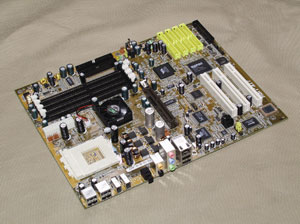
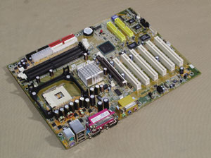
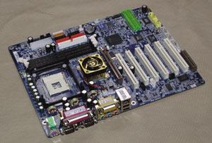
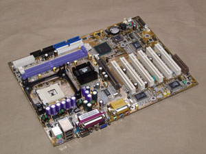

Олег Денисов, Сергей Назаров
Наборы микросхем Intel 845E, 845G и 850E появились на свет по одной-единственной причине: компании Intel была нужна "обвязка" под новый ЦП Pentium 4 с тактовой частотой системной шины 533 МГц (имеется в виду эффективная тактовая частота системной шины, физически она тактируется сигналом с частотой 133 МГц), с которым чипсеты Intel 845D и 850 уже не могли работать. Поэтому главное отличие новых наборов микросхем от предшественников - поддержка системной шины 533 МГц (Intel 850E вообще ничем больше не отличается от Intel 850). Правда, некоторые компании выпускают системные платы на базе Intel 850E с поддержкой памяти PC1066 RDRAM, но делают это в нарушение стандартов, так как согласно спецификации Intel 850E не обеспечивает работу с ОЗУ этого типа.
Помимо этого в наборе микросхем Intel 845E, по сравнению с Intel 845D, вместо четырех портов USB 1.1 появились шесть портов USB 2.0, улучшен IDE-контроллер (добавлена возможность горячей замены IDE-устройств) и контроллер интерфейса AC'97 (появился цифровой S/PDIF-выход).
Позиционирование наборов микросхем и системных плат на их базе, конечно же, осталось прежним. Назначение Intel 845E, как и ранее, двояко: его можно использовать для сборки как недорогих серийных ПК, так и мультимедийных систем класса high-end, в то время как Intel 850E - это набор микросхем для профессиональных рабочих станций.
Что же касается Intel 845G, то он отличается от Intel 845E только тем, что в него встроен графический процессор, поэтому системные платы на его базе предназначены для построения дешевых машин, где не требуется мощный графический адаптер. При этом, однако, надо иметь в виду, что встроенное графическое ядро Intel 845G очень медленно работает с 3D-приложениями.
Подробные характеристики системных плат приведены в табл. 1.
Методика тестированияДля определения общей производительности системы мы пользовались пакетом ZD Content Creation Winstone 2002 1.0.1, который предназначен для измерения быстродействия ПК при работе с популярными мультимедиа-приложениями и ПО для создания Web-контента (результаты тестирования приведены в табл. 2). Производительность графической подсистемы при работе с 3D-играми измерялась средствами пакета MadOnion 3DMark2001 SE (табл. 2). Для измерения быстродействия видеоподсистемы при работе с двумерной графикой и дисковой подсистемы мы использовали, соответственно, интегральные тесты Business Graphics WinMark 99 и High-End Graphics WinMark 99, а также High-End Disk WinMark 99 и Business Disk WinMark 99 из пакета ZD WinBench 99 2.0 (табл. 2). Для оценки скорости работы процессора использовались тесты из состава ПО SiSoft Sandra Standard 2002.1.8.59 (результаты приведены в табл. 3), а подсистемы памяти - тесты из этого же пакета и программа MemSpeed. В дополнение к этому мы использовали пакет WCPUID 3.0g, с помощью которого измерялись тактовые частоты ядра процессора, системной шины и шины памяти (табл. 3). Отметим, что мы замеряли отклонение тактовой частоты системной шины от номинального значения, определенного в спецификации ЦП (в данном случае 133,33 МГц), поскольку ее завышение снижает надежность работы компонентов ПК и сокращает срок их эксплуатации. Если тактовая частота была равна или больше 134,00 МГц, это считалось серьезным нарушением стандарта, и общая оценка качества системной платы снижалась. Для проверки системных плат на наличие дополнительного "запаса прочности" выполнялся тест на стабильность работы в режиме разгона. Частота системной шины увеличивалась примерно до 140 МГц, после чего повторялись все тесты на скорость работы системы. Если при этом обнаруживались проблемы, то тактовая частота системной шины последовательно снижалась до тех пор, пока они не исчезали. Все тесты выполнялись под управлением ОС Windows XP Professional Build 2600 с установленными Ultra ATA-драйверами Intel Application Accelerator 2.2.0.2126 при видеорежиме с разрешением 1024?768, глубиной цвета 32 бит и частотой кадровой развертки 85 Гц (кроме тестов из пакета MadOnion 3DMark2001 SE, которые выполнялись при разрешении 1280x1024, глубине цвета 32 бит и отключенном Vsync). Для проведения испытаний мы использовали следующее стендовое оборудование: процессор Intel Pentium 4 2,53 ГГц (кэш L2 512 Кбайт), модуль памяти DDR266 SDRAM емкостью 256 Мбайт, два модуля памяти PC800 RDRAM емкостью 128 Мбайт, два модуля памяти PC800 RDRAM емкостью 256 Мбайт, один модуль памяти PC1066 RDRAM емкостью 512 Мбайт, графический адаптер ASUS AGP-V8200 на наборе микросхем NVIDIA GeForce3 с 64 Мбайт видеопамяти и жесткий диск IBM IC35L080AVVA07 емкостью 80 Гбайт. |
Выбор редакции
Gigabyte GA-8IEXP - это прежде всего системная плата с качественным дизайном, богатыми возможностями расширения системы и умеренной ценой. А благодаря повышенной надежности работы, которая обеспечивается технологией DualBIOS, высокой производительности и отличным возможностям разгона системы она была признана лучшей универсальной платой класса high-end, которая одинаково хорошо подойдет для построения мощных ПК любого назначения. Эта плата стала победителем испытаний в классе системных плат на базе набора микросхем Intel 845E и была отмечена знаком "Выбор редакции BYTE/Россия".
Превосходная оснащенность и хорошая производительность - вот достоинства модели ABIT IT7, выполненной в стиле "все в одном" и отмеченной знаком "Выбор редакции BYTE/Россия" как лучшее готовое решение для сборки многофункциональных систем.
В системной плате Albatron PX845E Pro II удачно сочетаются продуманный дизайн и привлекательная цена, которые дополнены повышенным "запасом прочности" BIOS и широкими возможностями расширения системы. Несомненно, среди протестированных моделей Albatron PX845E Pro II лучше всех подойдет на роль системной платы для сборки недорогих серийных ПК и по праву отмечена знаком "Выбор редакции BYTE/Россия".
Chaintech CT-9BJF оказалась самой быстрой системной платой на чипсете Intel 845G, а с учетом богатых возможностей расширения - победителем в своем классе. Она отмечена знаком "Выбор редакции BYTE/Россия" как лучшая системная плата для построения экономичного домашнего или офисного ПК.
К сожалению, платы на базе набора микросхем Intel 850E были представлены недостаточно полно - всего лишь тремя моделями, поэтому выбор победителя в этом классе мы не проводили.
Системные платы на базе Intel 845E
ABIT IT7
|  |  |
Компания ABIT имеет обыкновение вносить дополнения в базовый конструктив системной платы, разработанный изготовителем набора микросхем, которые выгодно выделяют ее изделия на фоне плат других производителей. ABIT IT7 - лишнее тому подтверждение. На сей раз инженеры компании, похоже, руководствовались принципом "все в одном", ибо по оснащенности дополнительными устройствами и разъемами эта модель превзошла всех конкурентов.
Вместо стандартных шести ABIT IT7 имеет 10 портов USB 2.0 (четыре порта появились за счет использования дополнительного USB-контроллера VIA VT6206), из которых шесть распаяны в виде внешних разъемов, а седьмой и восьмой можно вывести наружу с помощью скобы-расширителя, поставляемой вместе с платой. При желании до оставшихся двух портов можно добраться также с помощью скобы-расширителя, которая приобретается дополнительно. Решив, по-видимому, довести до конца "тотальную USB-зацию" этой платы, разработчики ABIT IT7 полностью отказались от медленных и морально устаревших PS/2-устройств - разъемы для PS/2-мыши и PS/2-клавиатуры у нее отсутствуют, а также от LPT- и COM-портов. Так что будьте бдительны: без USB-клавиатуры и USB-мыши работать с ABIT IT7 невозможно, равно как нельзя и подключить к ней принтер с параллельным или модем с последовательным интерфейсом.
Этим, однако, возможности периферийного расширения ABIT IT7 не исчерпываются - на плате размещен контроллер IEEE-1394 с тремя портами (два внешних, один внутренний).
Плюс к этому ABIT IT7 оснащена четырехканальным IDE RAID-контроллером, к которому можно подключить до восьми IDE-устройств (как правило, в системные платы встраиваются двухканальные IDE RAID-контроллеры, позволяющие подключить только четыре IDE-устройства), и звуковой подсистемой с оптическим S/PDIF-выходом и полным набором аудиоразъемов для подключения внешней шестиканальной акустики.
Еще одно конструктивное достоинство этой платы - продуманная подсистема диагностики и мониторинга состояния: на ней размещен небольшой LED-дисплей, на котором во время загрузки системы отображаются диагностические POST-коды, кнопки включения питания и горячей перезагрузки системы и звуковой капсюль - ими очень удобно пользоваться при сборке ПК и поиске аппаратных сбоев в его работе, а также разъем для подключения дополнительного внешнего термодатчика и пять (как правило, их бывает три) разъемов питания для вентиляторов. Среди других достоинств - наличие защелки для фиксации платы в AGP-гнезде, удобное расположение IDE-, IDE RAID-, FDC-разъемов и разъемов ATX-питания и неплохие возможности разгона с помощью программы настройки BIOS.
Учитывая возможность быстрого подключения к ABIT IT7 большого количества самых разнообразных устройств (благодаря дополнительным встроенным контроллерам), высокие результаты в тестах на скорость работы (CC Winstone 2002 - 2-е, High-End Disk WinMark - 3-е, Business Disk WinMark - 6-е, 3DMark2001 - 7-е место в своем классе), устойчивую работу в режиме разгона, хорошее качество документации, высокий уровень технической поддержки на Web-сайте производителя и, по нашему мнению, вполне оправданную цену, эту плату можно смело рекомендовать для построения современной многофункциональной системы типа "все в одном". ABIT IT7 вполне можно использовать и в качестве подарка: она упаковывается в коробку с футбольной символикой и комплектуется весьма оригинальным бонусом - надувным резиновым мячом, оформленным в таком же стиле; вполне возможно, что маркетологи ABIT хотели таким образом подчеркнуть "подарочную направленность" этой платы.
Встраивание дополнительных устройств привело, однако, к тому, что разработчикам платы пришлось пожертвовать двумя PCI-гнездами - у ABIT IT7 их всего четыре. Кроме того, при всем желании четыре IDE-разъема, добавившиеся от RAID-контроллера, нельзя разместить так, чтобы они не мешали "длинным" PCI-платам; как следствие - в гнезда PCI#2 и PCI#3 невозможно установить полноформатные PCI-адаптеры. Если приплюсовать сюда то, что программа настройки BIOS не позволяет назначать номера IRQ-прерываний PCI-устройствам, то станет ясно, что ABIT IT7 не годится для построения сложной системы или ПК с часто изменяющейся конфигурацией: ограниченное число PCI-гнезд, невозможность ручного контроля IRQ-прерываний и большое количество встроенных контроллеров может вызвать неразрешимые аппаратные конфликты.
Помимо этого у ABIT IT7 были отмечены такие конструктивные недочеты, как отсутствие поддержки технологии HDD S.M.A.R.T. в BIOS, близкое расположение DIMM- и AGP-гнезд (защелки на DIMM-гнездах мешают устанавливать AGP-видеоплату), использование FDC-разъема без пропуска ножки в ключевой позиции (что не соответствует требованиям стандарта и может вызвать проблемы при подключении к нему интерфейсного кабеля) и без дополнительной цветовой маркировки.
Acorp 4D845AP
Smart Panel II - вот "изюминка" платы Acorp 4D845AP. Эта внешняя коммуникационно-диагностическая панель, включенная в комплект поставки Acorp 4D845AP, оснащена LED-индикаторами для отображения POST-кодов во время загрузки системы, одним последовательным и двумя USB-портами, тремя звуковыми разъемами (Line-Out, Line-In, Mic-In) и кнопкой для переключения ПК в состояние Standby. Она устанавливается в 5,25-дюймовый отсек системного блока и подключается к системной плате с помощью четырех специальных разъемов.
Богатый набор ПО и подробное руководство пользователя, прилагаемые к Acorp 4D845AP, хороший уровень технической поддержки на Web-сайте изготовителя только усиливают приятное впечатление от первого знакомства с этой платой.
Отметим, что к нам на тестирование поступил базовый вариант модели Acorp 4D845AP - без дополнительных контроллеров и разъемов. Однако выпускаются модификации этой платы со встроенными LAN- и RAID-контроллерами и распаянными разъемами для подключения накопителей на карточках Smart Card и Memory Stick (оба устройства при необходимости включаются в комплект поставки).
Дизайн и разводка Acorp 4D845AP в целом выполнены на высоком уровне. Среди конструктивных достоинств этой платы - удачное взаимное расположение DIMM- и AGP-гнезд (защелки на DIMM-гнездах не мешают устанавливать AGP-адаптер); полный набор разъемов ATX-питания (основной ATX-разъем и два дополнительных четырехконтактных, ATX +12V и ATX +5/+12V, с дополнительными линиями питания - соответственно, +12 В и +5/+12 В); шесть разъемов питания для вентиляторов (как правило, их только три); удобный доступ к ATX-, IDE- и FDC-разъемам; наличие цветовой маркировки у IDE- и FDC-разъемов и встроенного звукового капсюля. Однако взаимное расположение IDE- и PCI-гнезд оставляет желать лучшего: IDE-разъемы не позволяют установить полноформатную плату в гнездо PCI#2, а если на системной плате распаять два IDE RAID-разъема, та же проблема возникнет для гнезда PCI#5.
Программа настройки BIOS этой платы в принципе предоставляет неплохие возможности для разгона, однако не обеспечивает полный контроль тактовых частот, поскольку не позволяет гибко управлять тактовой частотой PCI/AGP-шины. К недостаткам BIOS этой платы также следует отнести отсутствие контроля IRQ-прерываний у PCI-устройств и поддержки технологии HDD S.M.A.R.T.
Acorp 4D845AP успешно прошла тест на стабильность работы в режиме разгона и показала хорошую производительность в тестах на скорость работы, заняв 2-е место в своем классе в тесте Business Disk WinMark, 5-е - в High-End Disk WinMark и 7-е - в 3DMark2001. Исключением из правила стал тест CC Winstone 2002, в котором результат Acorp 4D845AP был ниже среднего уровня - скорее всего, по причине немного заниженной тактовой частоты системной шины (132,95 МГц вместо номинальной 133,33 МГц).
Еще одна отличительная черта Acorp 4D845AP - рекордно низкая цена, что с учетом уже перечисленных достоинств этой модели позволяет рекомендовать ее для построения дешевых ПК начального уровня.
Albatron PX845E Pro II
|  | |
Albatron PX845E Pro II - классический пример отлично спроектированной системной платы для сборки серийных компьютеров, которая, как и должно быть, не может похвастаться обилием модных "наворотов", но в то же время имеет все необходимое для построения ПК самого разного назначения: шесть портов USB 2.0 (четыре из них выводятся наружу с помощью внешней планки, прилагаемой к плате) вместе со стандартным набором PS/2/COM/LPT-портов, шесть PCI-гнезд, встроенные LAN- и RAID-контроллеры, встроенная шестиканальная звуковая подсистема с блоком внешних аналоговых портов и внутренним разъемом с S/PDIF-входом/выходом (планка для вывода наружу S/PDIF-портов приобретается дополнительно) и разъемы для подключения накопителей на карточках Smart Card и Memory Stick.
Отметим еще две оригинальные особенности: Albatron PX845E Pro II имеет подсистему голосового воспроизведения диагностических сообщений Voice Genie и две дублирующие друг друга микросхемы с программным кодом BIOS (причем выбор микросхемы, из которой будет считываться код BIOS, выполняется вручную с помощью dip-переключателя на плате, и это надежнее автоматического "переключения" рабочей микросхемы с кодом BIOS, как это происходит, например, у плат Gigabyte, оснащенных технологией DualBIOS).
Разводка PCB у Albatron PX845E Pro II продумана очень хорошо, благодаря чему имеется удобный доступ ко всем элементам платы (за исключением, пожалуй, основного разъема ATX-питания, окруженного DIMM-, FDC- и IDE-гнездами) и даже возможность установки полноформатных адаптеров во все PCI-гнезда (и это несмотря на то, что за ними размещены два IDE RAID-разъема). Среди конструктивных достоинств Albatron PX845E Pro II отметим еще наличие защелки для фиксации AGP-платы, а из недостатков - близкое взаимное расположение DIMM- и AGP-гнезд (поэтому защелки на DIMM-гнездах мешают устанавливать AGP-плату) и отсутствие цветовой маркировки у FDC-разъема.
Программа настройки BIOS этой платы сделана весьма качественно и предоставляет отличные возможности для разгона, однако не позволяет управлять назначением IRQ-прерываний PCI-устройствам.
Albatron PX845E Pro II успешно справилась с тестом на стабильность работы в режиме разгона и хорошо зарекомендовала себя в тестах 3DMark2001 (4-е место в своем классе) и CC Winstone 2002 (здесь она продемонстрировала средний результат), а вот в дисковых тестах Business Disk WinMark и High-End Disk WinMark ее показатели были ниже среднего.
Грамотный дизайн, отличные возможности расширения системы, повышенная надежность работы BIOS благодаря дублированию его программного кода, достаточный "запас прочности" для разгона системы, прекрасно подготовленная документация, хорошая техническая онлайновая поддержка и, что немаловажно, весьма привлекательная цена - все это позволяет считать Albatron PX845E Pro II одной из лучших современных системных плат для построения серийных ПК; ее можно смело рекомендовать для использования в этом качестве.
ASUS P4B533-E
Сразу же скажем, что от работы с системной платой ASUS P4B533-E у нас осталось двойственное впечатление. С одной стороны, весьма оригинальная модель с множеством интересных решений и широкими возможностями, с другой - довольно сильное, на наш взгляд, отклонение от штатных рабочих режимов и сбои в работе.
Даже поверхностное знакомство с характеристиками ASUS P4B533-E убеждает в том, что это системная плата класса high-end, предназначенная для построения высокопроизводительных и многофункциональных ПК: гнездо AGP Pro для установки мощных AGP-плат с повышенным энергопотреблением, шесть PCI-гнезд, двухканальный RAID-контроллер, два порта IEEE-1394, шесть портов USB 2.0 (кстати, проблем с выводом наружу всех шести портов у пользователя не будет - необходимая для этого USB-планка поставляется вместе с ASUS P4B533-E), встроенный сетевой интерфейс, разъем для подключения накопителя на карточках Smart Card, шестиканальная звуковая подсистема с цифровым S/PDIF-входом/выходом и, конечно же, стандартный блок COM/LPT-портов.
И это далеко не все, что нам понравилось в системной плате ASUS P4B533-E. Из множества однотипных конкурентов ее выделяют оригинальные технологии, разработанные ASUSTeK и встроенные в эту модель. Некоторые из них хорошо известны и успешно применялись ранее. В их числе ASUS EZ Flash BIOS ASUS - в микросхему с BIOS встраивается специальный программный микрокод, с помощью которого можно обновить содержимое BIOS; этот микрокод запускается на выполнение комбинацией клавиш Alt+F2 во время загрузки системы. ASUS MyLogo2 позволяет редактировать графическую заставку, которая появляется на экране во время загрузки системы. ASUS JumperFree дает возможность двояко управлять тактовыми частотами системной платы - либо с помощью переключателей на плате, либо с помощью программы настройки BIOS (выбор режима управления осуществляется специальным джампером на плате). Как правило, используется более удобный режим управления через BIOS, но при разгоне надежнее режим управления через переключатели, так как иногда настройки BIOS могут самопроизвольно "сбрасываться". ASUS iPanel - на плате распаивается разъем для подключения специального модуля ASUS iPanel Basic/Deluxe, монтируемого в отсек системного блока для 5,25-дюймового накопителя, на передней панели которого размещаются внешние порты ввода-вывода и индикаторы состояния системы, причем конструкция этого модуля разработана таким образом, что в него можно установить еще один 3,5-дюймовый жесткий диск - сзади передней панели.
Перечислим также появившиеся недавно технологии: ASUS Q-fan позволяет вручную задать скорость вращения вентиляторов, подключенных к системной плате, с помощью программы настройки BIOS. ASUS Post Reporter - в плату встраивается речевой контроллер производства компании Winbond, который "озвучивает" POST-сообщения во время загрузки системы, проигрывая соответствующие голосовые сообщения - их можно редактировать средствами программы Winbond Voice Editor (она входит в комплект поставки системной платы). Суть технологии ASUS EZ Plug в том, что функционально квадратный четырехконтактный разъем питания ATX +12V, предоставляющий дополнительные линии питания с напряжением 12 В для ЦП, дублируется стандартным четырехконтактным разъемом питания на 12 В (такие разъемы питания используются, например, в 5,25-дюймовых накопителях), распаянным на плате и получившим в терминологии ASUSTeK специальное название EZ Plug. Благодаря этому системную плату можно использовать в сочетании как с новыми блоками питания, сделанными специально для ПК с Pentium 4 и имеющими дополнительные линии питания, так и со старыми, где есть только один разъем ATX-питания.
Нельзя также не отметить у ASUS P4B533-E гибкую настройку тактовых частот и напряжения питания, что предоставляет отличные возможности для "тонкой доводки" разогнанной системы, возможность назначения IRQ-прерываний PCI-устройствам средствами программы настройки BIOS, поддержку в BIOS технологии HDD S.M.A.R.T., наличие на плате разъема для подключения внешнего термодатчика (в руководстве пользователя к нему рекомендуется подсоединить термодатчик, встроенный в блок питания). В комплект поставки входит богатый набор ПО и прекрасное руководство пользователя, хотя в нем почему-то не перечислены возможные значения тактовых частот системной и PCI/AGP-шины и коэффициента умножения тактовой частоты процессора, которые можно задать в программе настройки BiOS (эта информация, вообще говоря, может быть важна для пользователей, выбирающих системную плату для ПК, который будет разгоняться или работать на нестандартных тактовых частотах). Отметим также хорошую техническую поддержку на Web-сайте изготовителя.
А вот разводка ASUS P4B533-E сделана неудобно: DIMM- и AGP-гнезда расположены слишком близко друг к другу, поэтому защелки на DIMM-гнездах мешают устанавливать AGP-плату; разъемы IDE RAID затрудняют установку полноформатных плат в гнезда PCI#5 и PCI#6; пару конденсаторов, распаянных "под боком" основного разъема ATX-питания, легко повредить при "защелкивании/отщелкивании" последнего; IDE- и FDC-разъемы расположены слишком близко друг к другу, что мешает подключать к ним интерфейсные кабели; доступ к разъемам CD-In, AUX-In, Modem-In перекрывается адаптерами, установленными в гнезда PCI#1 и PCI#2, а к разъемам IEEE-1394 - теми, что установлены в PCI#4 и PCI#5. Плюс к тому такая "мелочь", как отсутствие цветовой маркировки у FDC-разъема.
Но главный недостаток ASUS P4B533-E, по нашему мнению, - нарушение штатного режима работы, причем сразу по двум пунктам: самое большое среди всех протестированных плат превышение номинального значения тактовой частоты системной шины (134,66 МГц вместо положенных по спецификации 133,33 МГц) и завышенное напряжение питания модулей памяти (как минимум 2,6 В вместо стандартных 2,5 В). Если первое отклонение от спецификации типично для системных плат ASUSTeK и продиктовано исключительно маркетинговыми соображениями - пусть и незначительно, но обогнать конкурентов по производительности, то второе, скорее всего, стало следствием первого - чтобы добиться стабильной работы ОЗУ на повышенной тактовой частоте, необходимо увеличить напряжение питания. Заметим, что у ASUS P4B533-E нет индикации текущей рабочей тактовой частоты шины памяти - ее значение не высвечивается на экране во время загрузки системы и не отображается в программе настройки BIOS. Вполне возможно, это сделано не случайно. В обоих случаях, на наш взгляд, компания ASUSTeK грубо нарушает стандарты, используя запрещенные приемы повышения быстродействия системы.
Кстати, выполнение некоторых тестов на скорость работы на ASUS P4B533-E при загруженном в BIOS наборе установок Setup Defaults заканчивалось аварийно, и для разрешения этой ситуации пришлось поднять напряжение питания процессора, AGP-шины и шины памяти, после чего все тесты прошли успешно как в стандартном режиме, так и в режиме разгона. Весьма вероятно, что причиной сбоев стала завышенная тактовая частота системной шины и, как следствие, ядра ЦП, PCI/AGP-шины и шины памяти.
Вопреки нашим ожиданиям, искусственное повышение тактовых частот не обеспечило этой плате абсолютного превосходства в тестах на скорость работы. ASUS P4B533-E лидировала в своем классе по показателям 3DMark2001, Business Graphics WinMark и High-End Graphics WinMark, но в тесте Business Disk WinMark заняла только 4-е место, а в тестах High-End Disk WinMark и CC Winstone ее результат был ниже среднего.
Что касается цены ASUS P4B533-E, то она примерно на 20-30% выше, чем у аналогичных моделей других изготовителей (что традиционно для продукции ASUSTeK), но, по нашему мнению, была бы оправданна, если бы не сбои в работе системы. Можно только надеяться, что нестабильная работа системы, отмеченная в ходе испытаний, вызвана недостатками конкретного экземпляра этой платы, поступившего на тестирование, и в целом нехарактерна для модели ASUS P4B533-E.
Canyon CN-9IEA
Все характеристики Canyon CN-9IEA говорят о том, что эта плата сконструирована специально для недорогих домашних мультимедийных компьютеров. С одной стороны, у нее нет необходимого атрибута "офисных" системных плат - встроенного сетевого интерфейса, с другой - отсутствуют типичные черты моделей, предназначенных для построения мощных ПК, - встроенный контроллер RAID или IEEE-1394. Но в то же время Canyon CN-9IEA имеет шестиканальную аудиоподсистему с S/PDIF-входом/выходом, возможность подключения комбинированного накопителя для карточек Memory Stick, Smart Card и Secure Digital Memory Card, до пяти PCI-плат и одного CNR-адаптера. Плата комплектуется отличным руководством пользователя, а вот техническая поддержка этой модели на Web-сайте изготовителя организована из рук вон плохо.
Среди конструктивных достоинств Canyon CN-9IEA - возможность назначения IRQ-прерываний PCI-устройствам в программе настройки BIOS; поддержка в BIOS технологии HDD S.M.A.R.T.; наличие на плате четырех диагностических LED-индикаторов для отображения POST-кодов во время загрузки системы, встроенного звукового капсюля и защелки для фиксации AGP-платы; удобное расположение разъемов ATX-питания и IDE-разъемов. Из недостатков мы отметили близкое взаимное расположение DIMM- и AGP-гнезд (защелки на DIMM-гнездах мешают устанавливать AGP-адаптер) и использование FDC-разъема без пропуска ножки в ключевой позиции и без цветовой маркировки.
Кстати, согласно руководству пользователя помимо основного разъема ATX-питания и четырехконтактного разъема ATX +12V с дополнительными линиями питания напряжением +12 В на плате должен быть размещен еще один - шестиконтактный ATX +3.3V/+5V с дополнительными линиями питания (напряжением +3,3 и +5 В). Тем не менее такого разъема не было, хотя разводка под него и сделана.
Возможностей программы настройки BIOS у Canyon CN-9IEA явно недостаточно для эффективного управления режимом работы платы при ее разгоне: слишком грубая настройка тактовой частоты PCI/AGP-шины и напряжения питания ядра процессора, нет контроля напряжения питания шины памяти и AGP-шины и управления тактовой частотой шины памяти (текущее значение которой, кстати, нигде не отображается - ни во время загрузки системы, ни в программе настройки BIOS). Впрочем, все это не помешало Canyon CN-9IEA успешно пройти тест на "выживание" в режиме разгона.
Тактовая частота системной шины этой платы была ниже номинального значения, довольно сильно отклонившись от него, - 132,87 МГц, что, скорее всего, послужило причиной неважных показателей в тестах CC Winstone и 3DMark2001, в которых Canyon CN-9IEA проиграла всем конкурентам в своем классе. В то же время по показателю Business Disk WinMark она заняла 3-е место, а в тестах High-End Disk WinMark, Business Graphics WinMark и High-End Graphics WinMark ее результаты были на среднем уровне.
ECS L4IBAE
При первом знакомстве с ECS L4IBAE создается впечатление, что это типичный представитель целого ряда системных плат, предназначенных для построения компьютеров high-end, с расширенными возможностями наращивания системы и характерной для моделей этого класса функциональностью. Однако при ближайшем рассмотрении оказалось, что ECS L4IBAE разрабатывалась специально для серийных компьютеров массовой сборки и для продажи OEM-сборщикам ПК, но не рядовому покупателю (хотя последнее, конечно, не исключено).
К такому заключению мы пришли прежде всего потому, что ECS L4IBAE имеет встроенные контроллеры - сетевой, IDE RAID и IEEE-1394 (используется микросхема VIA VT6306) и, казалось бы, предназначена для построения высокопроизводительных и хорошо оснащенных систем самого разного назначения. Поэтому, по идее, ее функциональные возможности должны были раскрываться по максимуму, но не тут-то было: у ECS L4IBAE распаяно минимальное количество внешних USB-портов - всего лишь два, нет S/PDIF-портов и, что нас очень удивило, ИК-порта, а в комплекте поставки отсутствуют скобки-расширители для вывода наружу портов IEEE-1394 и оставшихся четырех USB-портов. Кроме того, на плате есть три специальных разъема, которые, как указывается в руководстве пользователя, используются исключительно в OEM-системах и дублируют функции своих стандартных аналогов. Это разъем для вывода наружу USB-портов, разъем для вывода на переднюю панель корпуса ПК звуковых портов и разъем для подключения кнопок и индикаторов, размещенных на передней панели системного блока.
К тому же ECS L4IBAE не позволяет контролировать назначение IRQ-прерываний PCI-устройствам (хотя в то же время ее BIOS обеспечивает работу с технологией HDD S.M.A.R.T.). Нет возможности гибко контролировать тактовые частоты и напряжение питания: нельзя плавно, с шагом 1 МГц, изменять тактовую частоту системной шины; довольно грубая настройка тактовых частот PCI- и AGP-шины (которые к тому же не рассинхронизированы с тактовой частотой системной шины); нет контроля напряжения питания AGP-шины и шины памяти; отсутствует индикация текущего значения тактовой частоты шины памяти. Однако "запас прочности" по частоте системной шины у этой платы есть, и она успешно прошла тест на стабильность работы в режиме разгона.
Все это говорит о том, что разработчики ECS L4IBAE стремились максимально снизить стоимость системной платы (что в немалой степени определяет конкурентоспособность продукта массового использования) за счет "обрезания" редко используемых функций. И, надо сказать, им это удалось - для своего уровня оснащенности ECS L4IBAE стоит очень дешево!
Конструктивно эта плата выполнена на хорошем уровне: среди ее достоинств - закругленные углы текстолитовой основы, удобное расположение разъемов ATX-питания, наличие защелки для фиксации AGP-платы и встроенного звукового капсюля. Из недостатков мы отметили близкое расположение DIMM- и AGP-гнезд (защелки на DIMM-гнездах мешают устанавливать AGP-адаптер), не совсем удачное расположение IDE RAID-разъемов, которые не позволяют установить полноформатную плату в гнездо PCI#6, и отсутствие цветовой маркировки у FDC-разъема.
Во время испытаний ECS L4IBAE были обнаружены две грубые ошибки в проектировании BIOS. Во-первых, если загружался набор установок BIOS по умолчанию для повышения производительности системы (Optimized Defaults), то стендовая установка вела себя крайне неустойчиво и даже не всегда проходила этап инициализации. Поэтому пришлось использовать набор установок для снижения производительности и повышения надежности работы Fail-Safe Defaults. Во-вторых, в обоих наборах был включен режим ручного контроля временных задержек на шине памяти (параметр DRAM Timing Selectable установлен равным Manual), а значения этих задержек были минимальными (т. е. был выставлен самый скоростной "тайминговый" режим работы модулей памяти). Вследствие этого даже с набором установок Fail-Safe Defaults система работала неустойчиво, и пришлось включить автоматический режим определения временных задержек (установить параметр DRAM Timing Selectable равным By SPD).
Однако эти ошибки программирования BIOS нельзя считать недостатком платы ECS L4IBAE, поскольку в ней была "прошита" предпродажная версия BIOS, что даже отмечено в ее названии - Evaluation ROM - NOT FOR SALE. Отметим также, что для испытаний мы не стали использовать версию BIOS с Web-сайта Elitegroup, поскольку в плате был "прошит" более свежий программный код BIOS.
Что же касается производительности ECS L4IBAE, то она была на хорошем уровне. По показателям Business Graphics WinMark и High-End Graphics WinMark эта модель заняла, соответственно, 2-е и 3-е места в своем классе, ее результаты в тестах 3DMark2001 и High-End Disk WinMark были на среднем уровне, а в тестах CC Winstone и Business Disk WinMark - немного ниже среднего. При этом тактовая частота системной шины ECS L4IBAE была выше номинальной, но в допустимых пределах - 133,90 МГц.
Fastfame 8IJW
Отличительная особенность системной платы Fastfame 8IJW - оснащенность качественным IDE RAID-контроллером, который позволяет объединить жесткие диски не только в RAID-массивы уровней 0 и 1 (чем возможности большинства IDE RAID-контроллеров, встроенных в системные платы, как правило, и ограничиваются), но и в массив уровня 0+1, а также организовать дисковый массив типа JBOD. В остальном возможности расширения системы у Fastfame 8IJW совершенно стандартны.
Нам очень понравился грамотный дизайн Fastfame 8IJW, а особенно - продуманное расположение IDE RAID-разъемов, которые размещены так, что не мешают устанавливать полноформатные PCI-платы. Отметим также удобное расположение разъемов ATX-питания, IDE- и FDC-разъемов; наличие защелки для фиксации AGP-платы и встроенного звукового капсюля; поддержку технологии HDD S.M.A.R.T. в BIOS. Впрочем, у Fastfame 8IJW есть и конструктивные недостатки: хотя DIMM- и AGP-гнезда разнесены довольно далеко, защелки на DIMM-гнездах все же несколько затрудняют установку AGP-платы; доступ к звуковым разъемам CD-In, Aux-In, Modem перекрывается адаптерами, установленными в гнезда PCI#1 и PCI#2; программа настройки BIOS не позволяет вручную контролировать распределение IRQ-прерываний между PCI-устройствами.
Отметим также, что техническая поддержка Fastfame 8IJW на Web-сайте ее изготовителя недостаточно полна, а вот к руководству пользователя этой платы у нас претензий не было.
Разогнать Fastfame 8IJW невозможно. По-видимому, разработчики платы решили строго следовать спецификациям Intel и не оснастили ее средствами ручного контроля тактовых частот и напряжений питания. Что ж, они по-своему правы: по крайней мере все составляющие ПК будут гарантированно работать в штатных режимах.
Кстати, тактовая частота системной шины у Fastfame 8IJW занижена до 132,89 МГц - скорее всего, также для повышения надежности работы системы. Как следствие, эта плата заняла предпоследнее место в своем классе по показателям CC Winstone и 3DMark2001. В дисковых тестах она, однако, была одной из лучших: в Business Disk WinMark - 1-место, High-End Disk WinMark - 4-е, а в тестах Business Graphics WinMark и High-End Graphics WinMark показала средние результаты.
FIC VC19
FIC VC19 - типичный представитель современных системных плат класса high-end и обладает всеми обязательными для этого атрибутами: встроенный сетевой и IDE RAID-контроллер, шесть PCI-гнезд, разъемы для подключения накопителей на карточках Smart Card и Memory Stick и богатый набор прикладного ПО в комплекте поставки. Однако среди конкурентов ее выделяет качественная звуковая подсистема с дополнительными внешними аналоговыми разъемами для подключения шестиканальной акустики и с цифровыми коаксиальными и оптическими S/PDIF-входами/выходами - все эти порты выводятся наружу с помощью скобы-расширителя, которая подключается к специальному разъему на плате с маркировкой "5.1 Audio".
К достоинствам FIC VC19 следует отнести и "правильное" размещение IDE RAID-разъемов, которые не мешают устанавливать полноформатные PCI-платы; наличие защелки для фиксации AGP-адаптера и встроенного звукового капсюля; возможность назначения IRQ-прерываний PCI-устройствам с помощью программы настройки BIOS и поддержку в BIOS технологии HDD S.M.A.R.T.; возможность загрузки системы с внешних USB-устройств (флоппи-дисководов, ZIP-накопителей, CD-приводов и жестких дисков) и редактирования графической заставки, отображаемой на экране во время загрузки системы, средствами программы LogoGenie (включена в комплект поставки); удобное размещение IDE- и FDC-разъемов; хорошую техническую поддержку на Web-сайте изготовителя и подробное руководство пользователя (в нем, правда, не указаны возможные значения тактовой частоты системной шины, которые можно установить вручную).
Из недостатков можно назвать отсутствие ИК-порта; вертикальное расположение батарейки (что может помешать установке некоторых "длинных" плат расширения в гнездо PCI#1); близкое расположение DIMM- и AGP-гнезд (защелки на DIMM-гнездах мешают устанавливать AGP-плату); неудобное расположение основного разъема ATX-питания, который "зажат" между DIMM- и IDE-разъемами; отсутствие цветовой маркировки у FDC-разъема.
Кроме того, FIC VC19 предоставляет весьма ограниченные возможности для разгона, поскольку у этой системной платы можно вручную контролировать только тактовую частоту системной шины, к тому же довольно грубо: ее нельзя варьировать с шагом 1 МГц, а тактовые частоты PCI- и AGP-шин и напряжения питания ядра процессора, AGP-шины и шины памяти всегда устанавливаются автоматически. Но тест на стабильность работы в режиме разгона FIC VC19 прошла успешно, так что необходимый "запас прочности" у этой платы есть.
Несмотря на то что тактовая частота системной шины у FIC VC19 ниже, чем у всех конкурентов в ее классе, - 132,84 МГц, в тестах на скорость работы она продемонстрировала хорошую производительность, показав результат немного выше среднего в тесте CC Winstone, средний - в 3DMark2001, Business Graphics WinMark и High-End Graphics WinMark и только в дисковых тестах Business Disk WinMark и High-End Disk WinMark - ниже среднего.
Gigabyte GA-8IEXP
|  | |
Системная плата Gigabyte GA-8IEXP - это удачное сочетание качественного дизайна, богатых возможностей расширения и разгона системы и повышенной надежности работы BIOS. Добавьте к этому высокую производительность, отличную техническую онлайновую поддержку, прекрасную документацию и весьма умеренную цену, и станет ясно, почему Gigabyte GA-8IEXP была признана лидером проведенных испытаний и отмечена знаком "Выбор редакции BYTE/Россия".
Пожалуй, главная особенность этой платы - использование технологии DualBIOS, разработанной компанией Gigabyte. Суть ее заключается в том, что на плате размещаются две микросхемы BIOS: основная Main BIOS и резервная Backup BIOS. При нормальной работе платы система, как правило, загружается с микросхемы Main BIOS. Если загрузка с Main BIOS невозможна - по причине выхода из строя самой микросхемы или сбоя в работе прошитого в ней программного кода (например, если содержимое BIOS было переписано вирусом или произошла ошибка во время процедуры обновления), то систему можно загрузить с Backup BIOS.
В технологии DualBIOS также предусмотрена возможность выбирать, с какой базовой микросхемы будет проводиться загрузка, и включение режима автоматической загрузки с альтернативного BIOS, если выбранный в качестве базового выходит из строя.
Кроме того, технология DualBIOS обеспечивает возможность записи содержимого флэш-памяти Main BIOS во флэш-память Backup BIOS и наоборот с помощью программного кода, "прошитого" на системной плате. Это довольно удобно: во-первых, отпадает необходимость загружать систему в "чистом" DOS-режиме с последующим запуском программы обновления BIOS; во-вторых, исключается возможность использования программы обновления BIOS, которая не предназначена для обновления содержимого флэш-памяти именно той микросхемы BIOS, которая установлена на плате; в-третьих, этот программный код, "прошитый" на плате, достаточно интеллектуален и перед перезаписыванием содержимого BIOS проверяет, не испорчены ли данные во флэш-памяти исходного BIOS, а если испорчены, то он блокирует процедуру записи.
Далее, в технологии DualBIOS предусмотрена возможность записи "имиджа" BIOS с внешнего носителя - дискеты или жесткого диска - во флэш-память Main BIOS и Backup BIOS. Это выполняется также средствами программного кода, "прошитого" на системной плате, что исключает проблемы, которые могут возникнуть при использовании "неправильной" программы обновления BIOS.
Как и все платы класса high-end, Gigabyte GA-8IEXP имеет широкие возможности наращивания системы и оснащена сетевым интерфейсом, двухканальным IDE RAID-контроллером, контроллером IEEE-1394 с тремя портами (используется микросхема VIA VT6306; все порты IEEE-1394 выводятся наружу с помощью скобы-расширителя), шестью портами USB 2.0 (четыре из них выводятся наружу с помощью скобы-расширителя), шестью PCI- и одним CNR-гнездом, разъемами для подключения накопителей на карточках Smart Card, Memory Stick и Secure Digital Memory Card, а также качественной звуковой подсистемой с S/PDIF-входом/выходом (оба S/PDIF-порта выводятся наружу с помощью скобы-расширителя).
Кроме того, Gigabyte GA-8IEXP обеспечивает загрузку системы с внешних USB-устройств (флоппи-дисководов, ZIP-накопителей, CD-приводов и жестких дисков) и позволяет управлять распределением IRQ-прерываний между PCI-устройствами. А вот технологию HDD S.M.A.R.T. эта плата, к сожалению, не поддерживает.
С точки зрения дизайна Gigabyte GA-8IEXP выполнена очень качественно. Стоит отметить закругленные углы текстолитовой основы; наличие защелки для фиксации AGP-платы; продуманное размещение IDE RAID-разъемов, которые не мешают устанавливать полноформатные PCI-платы; удобное расположение разъемов IEEE-1394 и USB 2.0 - на нижнем крае платы, а также разъемов Smart Card, Memory Stick и Secure Digital Memory Card - вверху на правом крае платы.
Однако Gigabyte GA-8IEXP оснащена таким количеством дополнительных электронных компонентов, что разводка у нее получилась "тесной" и доступ к некоторым элементам этой платы затруднен: DIMM- и AGP-гнезда близки друг к другу, так что защелки на DIMM-гнездах мешают устанавливать AGP-плату; IDE- и FDC-разъемы расположены тесно, что затрудняет подключение к ним интерфейсных кабелей; неудобно размещен разъем ATX +12V, "спрятанный" в верхнем левом углу платы; доступ к звуковым портам CD-In, Aux-In, S/PDIF-Out перекрывается PCI-платами, установленными, соответственно, в гнезда PCI#1 и PCI#2, PCI#2 и PCI#3, PCI#4 и PCI#5.
Любители разгона по достоинству оценят Gigabyte GA-8IEXP - плата обладает полным спектром возможностей для этого и успешно прошла тест на "выживание" в режиме разгона. Отметим, однако, что у нее не предусмотрена индикация тактовой частоты шины памяти ни во время загрузки системы, ни в программе настройки BIOS.
В тестах на скорость работы Gigabyte GA-8IEXP продемонстрировала довольно высокую производительность, заняв 4-е место в своем классе в тесте CC Winstone, 1-е - в High-End Disk WinMark и показав средний результат в тестах Business Disk WinMark, Business Graphics WinMark и High-End Graphics WinMark. И только в тесте 3DMark2001 ее результативность была немного ниже средней.
Что касается тактовой частоты системной шины, то она была выше номинальной - 133,98 МГц, но в допустимых пределах.
В целом Gigabyte GA-8IEXP отлично зарекомендовала себя во время испытаний и ее можно смело рекомендовать для построения высокопроизводительных систем самого разного назначения - от мощного мультимедийного ПК до сервера начального уровня.
Jet Way 845EPRO
Разработчики Jet Way 845EPRO стремились, скорее всего, спроектировать недорогую системную плату для ПК начального уровня. Этим, по-видимому, объясняется то, что функциональность платы сведена до минимума: Jet Way 845EPRO не имеет сетевого интерфейса, портов IEEE-1394, разъемов для подключения накопителей на флэш-картах и оснащена только двумя внешними USB-портами и незамысловатой звуковой подсистемой. Единственное исключение - встроенный двухканальный IDE RAID-контроллер.
В то же время, желая как-то выделить эту модель, инженеры Jet Way придали ей ряд оригинальных особенностей, а именно: в BIOS этой платы встроена аппаратная часть системы защиты и восстановления данных на жестких дисках Recovery Genius, а в комплект поставки Jet Way 845EPRO входит программная составляющая системы - ПО Recovery Genius 21st. Плата оснащена третьим ATX-разъемом - шестиконтактным ATX +3.3V/+5V с дополнительными линиями питания напряжением +3,3 В и +5 В; при загрузке системы на экране отображаются текущие значения основных напряжений питания и скоростей вращения вентиляторов.
Среди других достоинств Jet Way 845EPRO - возможность назначения IRQ-прерываний PCI-устройствам средствами программы настройки BIOS, поддержка в BIOS технологии HDD S.M.A.R.T., хорошая техническая поддержка на Web-сайте изготовителя и отличное руководство пользователя, а также устойчивая работа в режиме разгона и хорошие возможности разгона системы (здесь, однако, мы отметили два небольших недостатка: напряжение питания AGP-шины нельзя поднять выше 1,6 В; текущее значение тактовой частоты шины памяти нигде не отображается - ни при загрузке системы, ни в программе настройки BIOS).
В целом дизайн Jet Way 845EPRO выполнен на хорошем уровне: гнезда для процессора, модулей памяти и AGP-видеоплаты разнесены достаточно далеко, что позволяет устанавливать эти компоненты в любой последовательности и независимо друг от друга; есть защелка для фиксации AGP-платы; удобно расположены ATX-, IDE- и USB-разъемы - последние на нижнем крае платы. Однако IDE RAID- и FDC-разъемы размещены настолько неудачно, что "перекрывают" сразу три PCI-гнезда - PCI#2, PCI#3, PCI#4 - и не позволяют установить в них полноформатные PCI-платы.
В большинстве тестов на скорость работы Jet Way 845EPRO была одной из лучших в своем классе: CC Winstone - 3-место, 3DMark2001 - 5-е, Business Graphics WinMark - 3-е, High-End Graphics WinMark - 2-е. Однако эти результаты нельзя считать корректными, поскольку тактовая частота системной шины у этой платы была сильно завышена, выходя, по-нашему мнению, за пределы допустимого отклонения от стандарта, - до 134,00 МГц. А вот в тестах Business Disk WinMark и High-End Disk WinMark результаты Jet Way 845EPRO были почему-то низкими - в них она заняла последнее место.
MSI 845E Max2-BLR (MS-6398E)
Среди всех протестированных системных плат MSI 845E Max2-BLR выделяется тем, что она оснащена оригинальной технологией Bluetooth PC2PC, разработанной компанией Micro-Star для беспроводного соединения двух ПК. В поставляемый вместе с MSI 845E Max2-BLR комплект Bluetooth входит плата расширения Bluetooth (подключается к специальному разъему, расположенному рядом с гнездом PCI#5, после чего работа этого PCI-гнезда блокируется), антенна Bluetooth (подсоединяется к плате расширения Bluetooth) и портативный адаптер Bluetooth, выполненный в виде брелока (подключается ко второму компьютеру через USB-порт). Во время работы адаптер Bluetooth "захватывает" аппаратные ресурсы одного из USB-портов, поэтому нижний USB-разъем на скобе-расширителе USB 2.0 Cable закрыт наклейкой с надписью "Do not remove when using bluetooth".
Еще одна отличительная особенность MSI 845E Max2-BLR - внешняя диагностическая подсистема на LED-индикаторах, на которых во время инициализации системы отображаются POST-коды, весьма оригинальной конструкции: блок из четырех LED-индикаторов встроен в скобу-расширитель D-Bracket 2 и подключается к специальному разъему на системной плате.
Функциональные возможности MSI 845E Max2-BLR, обеспечивающие расширение системы, включают встроенные сетевой и двухканальный IDE RAID-контроллеры, шесть USB-портов (два из них выводятся наружу с помощью скобы-расширителя USB 2.0 Cable и еще два - с помощью скобы-расширителя D-Bracket 2), шесть PCI- и одно CNR-гнездо и шестиканальная звуковая подсистема с цифровыми коаксиальным и оптическим S/PDIF-выходами (оба S/PDIF-порта, а также два аналоговых звуковых разъема для подключения шестиканальной акустики выводятся наружу с помощью скобы-расширителя S-Bracket). Дополняют список достоинств платы отличная техническая поддержка на Web-сайте изготовителя и прекрасная документация.
И все это - за весьма умеренную цену. Так что MSI 845E Max2-BLR будет отличным выбором, если нужен мощный ПК с качественным звуком и беспроводной связью.
Отметим, однако, что MSI 845E Max2-BLR не имеет портов IEEE-1394 и разъемов для подключения накопителей на флэш-картах, и если ПК на ее базе потребуется превратить в полноценный, по современным меркам, мультимедийный компьютер, то придется дополнительно устанавливать соответствующие платы расширения.
Дизайн MSI 845E Max2-BLR выполнен весьма качественно. Среди конструктивных достоинств этой модели - продуманное размещение IDE RAID-разъемов, которые не мешают устанавливать полноформатные PCI-платы; удобное расположение ATX-, IDE- и FDC-разъемов; наличие защелки для фиксации AGP-платы; возможность назначения IRQ-прерываний PCI-устройствам средствами программы настройки BIOS. Из недостатков мы отметили близкое взаимное расположение DIMM- и AGP-гнезд (защелки на DIMM-гнездах мешают устанавливать AGP-плату); блокировку доступа к разъему CD-In и разъему для подключения скобы-расширителя S-Bracket платами, установленными в гнезда PCI#2 и PCI#3; отсутствие цветовой маркировки у FDC-разъема; отсутствие поддержки технологии HDD S.M.A.R.T. в BIOS.
MSI 845E Max2-BLR успешно прошла тест на стабильность работы в режиме разгона и предоставляет отличные возможности для разгона ПК за одним исключением: для полного управления режимом работы системы ей не хватает контроля тактовой частоты PCI/AGP-шины, которая жестко синхронизирована с тактовой частотой системной шины. Отметим также, что текущее значение тактовой частоты шины памяти не отображается ни при загрузке системы, ни в программе настройки BIOS.
По тактовой частоте системной шины, которая у MSI 845E Max2-BLR была ниже номинальной, эта модель проигрывала всем конкурентам в своем классе - за исключением FIC VC19 (у нее тактовая частота системной шины была такой же). Но, несмотря на это, MSI 845E Max2-BLR заняла третье место в тесте 3DMark2001 и показала средний результат в тестах CC Winstone и High-End Graphics WinMark; остальные же показатели скорости работы платы были ниже среднего.
Shuttle AB45
При первом же знакомстве с Shuttle AB45 становится ясно, что перед нами системная плата с "усеченной" функциональностью, предназначенная для дешевых серийных ПК начального уровня.
Эта модель не имеет сетевого интерфейса, CNR-гнезда, разъемов для подключения накопителей на флэш-картах, не говоря уже о дополнительных встроенных контроллерах (IDE RAID или IEEE-1394), разъема ATX +12V с дополнительными линиями питания с напряжением 12 В (это, вообще говоря, серьезное нарушение стандарта), защелки для фиксации AGP-платы. Она оснащена только двумя внешними USB-портами, пятью (вместо возможных шести) PCI-гнездами и FDC-разъемом без дополнительной цветовой маркировки. BIOS платы не обеспечивает управление распределением IRQ-прерываний между PCI-устройствами и работу с технологией HDD S.M.A.R.T. и позволяет разгонять систему только по тактовой частоте системной шины, что явно недостаточно для контроля режима работы "разогнанного" ПК. В комплекте поставки платы нет скоб-расширителей для вывода наружу S/PDIF-портов (есть только скоба-расширитель с одним звуковым аналоговым разъемом - для вывода звуковых каналов Central и Bass) и USB-портов (эта скоба-расширитель приобретается дополнительно).
Разработчики Shuttle AB45 сэкономили даже на текстолите, который идет на изготовление подложки: ширина платы на пять сантиметров меньше стандартной, и потому создается ощущение, что она "вытянута" в длину.
Но надо отдать должное разработчикам - своей цели они добились. Более чем привлекательная цена сочетается в этой модели с вполне приличной производительностью, стабильной работой в режиме разгона и хорошо продуманным дизайном, который обеспечивает свободный доступ ко всем элементам платы и удобство работы с ней, столь необходимое при массовой сборке компьютеров. Здесь следует особо подчеркнуть, что у Shuttle AB45 гнезда для ЦП, модулей памяти и AGP-платы расположены достаточно далеко друг от друга, так что эти компоненты можно устанавливать в любой последовательности и независимо друг от друга, а также обратить внимание на удобное расположение ATX-, IDE-, FDC- и звуковых разъемов и закругленность углов текстолитовой подложки.
Несмотря на заниженную тактовую частоту системной шины - 132,95 МГц (это довольно заметное отклонение от номинального значения), в тестах на скорость работы Shuttle AB45 продемонстрировала хорошую производительность, заняв 2-е место в своем классе в тесте High-End Disk WinMark, 4-е - в Business Graphics WinMark и High-End Graphics WinMark и показав результат выше среднего в тесте Business Disk WinMark и средний - в CC Winstone. И только в тесте 3DMark2001 ее показатель был ниже среднего.
Техническая поддержка Shuttle AB45 на Web-сайте изготовителя организована на хорошем уровне. Что же касается качества документации, то руководство пользователя весьма подробно, однако в нем почему-то не были описаны установки джампера, с помощью которого выставляется тактовая частота системной шины, и их пришлось "расшифровывать" по маркировке на плате.
Soltek SL-85DR2+-L
Soltek SL-85DR2+-L - это самая "навороченная" модификация семейства системных плат Soltek SL-85DR2; она отличается от базовой модели этого ряда только тем, что "усилена" встроенным сетевым и двухканальным IDE RAID-контроллером. В остальном возможности расширения системы у Soltek SL-85DR2+-L обычны: два внешних USB-порта и скоба-расширитель для вывода наружу еще двух USB-портов (а вот для вывода наружу двух оставшихся портов USB 2.0 придется дополнительно приобретать скобу-расширитель), шесть PCI-гнезд и шестиканальная звуковая подсистема с S/PDIF-входом/выходом (однако скобы-расширителя для вывода наружу аналоговых разъемов для подключения шестиканальной акустики и цифровых S/PDIF-портов в комплекте поставки Soltek SL-85DR2+-L не было). Заметим, что тестировавшийся экземпляр Soltek SL-85DR2+-L не имел CNR-гнезда, хотя согласно руководству пользователя эта модель должна им оснащаться, да и разводка под него была.
И все же Soltek SL-85DR2+-L имеет множество привлекательных особенностей, выгодно отличающих ее от многочисленных конкурентов. На плате распаян стандартный четырехконтактный разъем питания (такие разъемы используются, например, в 5,25-дюймовых накопителях), обеспечивающий дополнительные линии питания с напряжением +5 В и +12 В - в терминологии Soltek он носит название Peripheral Power и дублирует функции разъема питания ATX +12V. Благодаря этому Soltek SL-85DR2+-L можно использовать как с новыми блоками питания, сделанными специально для ПК с Pentium 4 и имеющими дополнительные линии питания, так и со старыми, где есть только один разъем ATX-питания. Плата оснащена специальной перемычкой для защиты AGP-гнезда от выгорания, если в него по ошибке устанавливается старая 2x AGP-плата с напряжением питания 3,3 В. Напряжение питания на шине памяти и AGP-шине контролируется с помощью перемычек на плате, что надежнее, чем средствами BIOS, так как при разгоне системы настройки BIOS могут самопроизвольно "сбрасываться". В BIOS платы встроена технология автоматического разгона системы по тактовой частоте системной шины RedStorm Overclocking. Плата оснащена термодатчиком, размещенным рядом с процессором и измеряющим температуру в непосредственной близости от него, а также разъемом для подключения дополнительного термодатчика (с его помощью можно, например, измерить температуру видеоплаты или жесткого диска).
Среди других достоинств Soltek SL-85DR2+-L отметим отличную документацию, богатый набор ПО в комплекте поставки, хорошо организованную техническую онлайновую поддержку (правда, за одним исключением - нам не удалось обнаружить на Web-сайте изготовителя драйверов для IDE RAID-контроллера) и возможность назначения IRQ-прерываний PCI-устройствам средствами программы настройки BIOS. А вот работу с технологией HDD S.M.A.R.T. эта плата, к сожалению, не обеспечивает.
Разводка Soltek SL-85DR2+-L, по нашему мнению, выполнена далеко не лучшим образом. IDE- и IDE RAID-разъемы размещены настолько неудачно, что "перекрывают" сразу три PCI-гнезда - PCI#2, PCI#3 и PCI#4 - и не позволяют установить в них "длинные" PCI-платы, а FDC-разъем "спрятан" в правый нижний угол. К тому же у Soltek SL-85DR2+-L нет защелки для фиксации AGP-платы. Вполне возможно, неудобная разводка - следствие того, что ширина платы на два сантиметра меньше стандартной, но с какой целью разработчики "заузили" Soltek SL-85DR2+-L, для нас осталось загадкой.
В конструкции этой платы, однако, есть и положительные моменты. Гнезда для процессора, модулей памяти и AGP-платы расположены достаточно далеко, поэтому эти компоненты можно устанавливать в любой последовательности и независимо друг от друга. Отметим также удобный доступ к разъемам питания, удобное расположение USB-разъемов и разъема для вывода наружу S/PDIF-портов и звуковых портов для подключения шестиканальной акустики - они размещены на нижнем крае платы - и свободный доступ к разъемам CD-In и Aux-In (как правило, они оказываются "зажатыми" между PCI-платами).
Soltek SL-85DR2+-L успешно выдержала испытание на стабильность работы в режиме разгона и в принципе предоставляет неплохие возможности для разгона системы, однако до полной функциональности ей не хватает контроля тактовой частоты PCI/AGP-шины (которая жестко синхронизирована с частотой системной шины).
В тестах CC Winstone и 3DMark2001 эта плата была одной из самых быстрых в своем классе, заняв в них 2-е место. Однако из-за сильно завышенной тактовой частоты системной шины, которая у Soltek SL-85DR2+-L составляла 134,00 МГц и, по-нашему мнению, превышала допустимое отклонение от стандарта, эта плата не попала в число претендентов на победу в испытаниях. А вот в других тестах ее показатели, к нашему удивлению, были неожиданно низкими: High-End Disk WinMark - результат ниже среднего; Business Disk WinMark, Business Graphics WinMark, High-End Graphics WinMark - предпоследнее место.
Системные платы на базе Intel 845G
AOpen MX4GR
Системная плата AOpen MX4GR была единственной моделью с форм-фактором Micro ATX среди протестированных системных плат и отличалась от них не только "скромными" габаритами и меньшим количеством PCI-гнезд - только три, но и более компактной разводкой, что неизбежно привело к целому ряду конструктивных недостатков: очень близкое взаимное расположение DIMM- и AGP-гнезд, в результате чего защелки на DIMM-гнездах значительно затрудняют установку AGP-платы; IDE-разъемы "перекрывают" все три PCI-гнезда, что делает невозможным использование "длинной" PCI-платы; доступ к разъемам питания затруднен из-за распаянных вокруг них электронных компонент; доступ к звуковым разъемам Aux-In и CD-In блокируется платами расширения - первый из них "зажат" между гнездами PCI#2 и PCI#3, второй - между PCI#3 и CNR-гнездом.
К недостаткам проектирования этой платы также следует отнести использование FDC-разъема без цветовой маркировки, отсутствие контроля распределения IRQ-прерываний между PCI-устройствами в программе настройки BIOS и обеспечения работы с технологией HDD S.M.A.R.T. в BIOS.
Впрочем, у AOpen MX4GR есть и достоинства, среди которых - защелка для фиксации AGP-платы, встроенный звуковой капсюль, превосходно подготовленное руководство пользователя, отличная техническая поддержка на Web-узле изготовителя и целый ряд встроенных в нее оригинальных технологий AOpen: AGP Protection - технология защиты AGP-интерфейса от выгорания (системная плата автоматически определяет напряжение питания AGP-адаптера и, в случае необходимости, предотвращает выход из строя микросхемы GMCH-концентратора; кроме того, если в AGP-гнездо устанавливается адаптер с напряжением питания 3,3 В, то на системной плате загорается специальный LED-индикатор), Watch Dog Timer - технология автоматического восстановления тактовой частоты системной шины (если во время инициализации системной платы, последовавшей после ручной установки частоты системной шины в программе настройки BIOS, POST-процедура самотестирования платы не завершается успешно в течение пяти секунд, то системная плата будет автоматически реинициализирована (перегружена), а частота системной шины при этом будет выставлена в соответствии со спецификацией ЦП), Resettable Fuse - технология защиты порта клавиатуры и USB-портов от перегрузки и короткого замыкания с помощью автоматического предохранителя (такой предохранитель не перегорает при перегрузке, а автоматически "выбивается", разрывая перегруженные цепи питания, после чего для восстановления их работоспособности достаточно включить его вручную) и Battery-Less Design - "безбатарейная технология", на которой стоит остановиться подробнее.
На сегодняшний день батарейка, которая необходима для хранения установок CMOS и генерации сигнала системного времени (RTC - real time clock) - непременный атрибут почти всех системных плат. Если снять батарею с таких плат, то все установки CMOS и системного таймера сбрасываются и их приходится восстанавливать заново вручную.
AOpen MX4GR, изготовленная с использованием "безбатарейной технологии", может работать без батарейки. Для хранения установок CMOS в ней применяется микросхема EEPROM. Пока ПК с такой системной платой подключен к сети питания, энергия для хранения установок CMOS и работы системного таймера поступает от его блока питания. При этом дубликат установок CMOS хранится в микросхеме EEPROM. Если же ПК обесточивается и на плате нет батарейки, то все установки CMOS и системный таймер сбрасываются. Тогда при его последующем включении все установки для CMOS могут быть считаны из микросхемы EEPROM и записаны в CMOS. Единственное, что потребуется выставить вручную, - это системное время.
Непременное условие нормальной работы ПК с "battery-less" системной платой - постоянное подключение системного блока к сети питания. В противном случае каждый раз после отключения ПК от сети питания придется вручную выставлять системное время. Это довольно неудобно, поэтому AOpen MX4GR оснащается батарейкой, как и все "обычные" системные платы.
Возможности разгона системы у AOpen MX4GR минимальны - эта плата позволяет изменять вручную только тактовую частоту системной шины. Но необходимый "запас прочности" у нее есть и тест на выживание в режиме разгона AOpen MX4GR прошла успешно.
В тестах на скорость работы AOpen MX4GR показала отличные результаты и по производительности обогнала всех соперников - даже несмотря на заниженную тактовую частоту системной шины, которая была самой низкой в ее классе - 132,84 МГц. Но вследствие "малогабаритности" не вошла в число претендентов на победу в конкурсе.
Chaintech CT-9BJF
|  | |
Системная плата Chaintech CT-9BJF продемонстрировала отличное быстродействие во время испытаний, заняв первое и второе место, соответственно, в тесте 3DMark2001 и CC Winstone, и была признана лидером по "скорострельности" в своем классе. А богатые возможности расширения - встроенный сетевой контроллер, шесть PCI- и одно CNR-гнездо, качественная шестиканальная звуковая подсистема, разъемы для вывода наружу второго последовательного порта и подключения накопителя на карточках Smart Card - окончательно склонили выбор в ее пользу. В итоге Chaintech CT-9BJF стала победителем проведенных испытаний среди плат на базе набора микросхем Intel 845G и была награждена знаком "Выбор редакции BYTE/Россия".
Дизайн Chaintech CT-9BJF в целом выполнен на хорошем уровне. Среди ее конструктивных достоинств мы отметили наличие звукового капсюля и защелки для фиксации AGP-платы; удобное расположение ATX-, IDE- и FDC- разъемов; отображение POST-кодов на экране во время загрузки системы; и возможность назначения IRQ-прерываний PCI-устройствам средствами программы настройки BIOS. А из недостатков - близкое взаимное расположение DIMM- и AGP-гнезд (поэтому защелки на DIMM-гнездах несколько затрудняют установку AGP-платы), отсутствие поддержки технологии HDD S.M.A.R.T. в BIOS и цветовой маркировки у FDC-разъема.
Тест на стабильность работы в режиме разгона Chaintech CT-9BJF прошла успешно, однако ее возможностей явно недостаточно для полного контроля над поведением разогнанной системы, поскольку эта плата позволяет управлять вручную только частотой системной шины и напряжением питания ядра процессора. Кстати, тактовая частота системной шины у Chaintech CT-9BJF завышена - 133,93 МГц вместо номинальной 133,33 МГц, но, по нашему мнению, в допустимых пределах.
А вот качество документации и технической он-лайн поддержки Chaintech CT-9BJF оставляет желать лучшего - мы не смогли обнаружить на Web-узле ее изготовителя электронное руководство пользователя, а в его печатной версии не было описания процедуры ее установки и было приведено описание лишь некоторых настроек BIOS. Остается надеяться, что со временем эти недостатки будут устранены.
EPoX EP-4G4A+
Разработчики EPoX EP-4G4A+, по-видимому, решили, что системная плата со встроенной и, очевидно, низкоскоростной графической подсистемой вряд ли будет использоваться в хорошо оснащенном мультимедийном ПК и поступили вполне разумно, "сэкономив" на ее звуковой подсистеме - у этой модели нет разъемов для подключения внешней шестиканальной акустики, хотя используемый в EPoX EP-4G4A+ аудиокодек AC'97 позволяет это сделать, и вывода аудиоканалов на переднюю панель системного блока. Но в то же время предоставили пользователям другие возможности для построения мощной и многофункциональной системы, оборудовав EPoX EP-4G4A+ сетевым интерфейсом, четырьмя внешними портами USB 2.0, двуканальным IDE RAID-контроллером и шестью PCI- и одним CNR-гнездом.
Следует, однако, отметить, что в комплект поставки EPoX EP-4G4A+ не входят скобы-расширители для вывода наружу пятого и шестого USB-, Game/MIDI- и S/PDIF-In/Out-портов, поэтому пользователям придется покупать их дополнительно.
К достоинствам EPoX EP-4G4A+ мы отнесли наличие на плате защелки для фиксации AGP-платы и небольшого LED-дисплея, на котором во время загрузки системы отображаются диагностические POST-коды; вывод на экран текущих значений температур, напряжений питания и скоростей вращения вентиляторов, измеренных подсистемой мониторинга состояния платы, во время загрузки системы; возможность контролировать распределение IRQ-прерываний PCI-устройствам с помощью программы настройки BIOS и поддержку в BIOS технологии HDD S.M.A.R.T.; отличные возможности для разгона системы и успешное прохождение теста на стабильность работы в режиме разгона; а также хорошую техническую поддержку на Web-узле изготовителя и подробно составленную документацию.
А вот разводка EPoX EP-4G4A+, по-нашему мнению, выполнена неудачно, что стало причиной ряда конструктивных недостатков: близкое расположение гнезд для ЦП, модулей памяти и AGP-платы, вследствие чего эти компоненты нельзя устанавливать независимо друг от друга; неудачное расположение FDC-разъема, который не позволяет установить полноформатную плату в гнездо PCI#4 и, помимо этого, не имеет пропущенной ножки в ключевой позиции и дополнительной цветовой маркировки; доступ к разъему Game/MIDI блокируется платами, установленными в гнезда PCI#4 и PCI#5, а к S/PDIF-In/Out- и USB-разъемам - в PCI#5 и PCI#6; неудобное расположение разъема питания, доступ к которому затруднен размещенными рядом с ним конденсаторами. Кроме того, у EPoX EP-4G4A+ нет разъема питания ATX+12V с дополнительными линиями питания с напряжением +12 В - это серьезное нарушение стандарта.
EPoX EP-4G4A+ продемонстрировала высокую производительность в тестах CC Winstone - второе место в своем классе - и Business Graphics WinMark и High-End Graphics WinMark - два первых места, но не вошла в число претендентов на победу в испытаниях вследствие сильно завышенной тактовой частоты системной шины - 134,00 МГц, отклонение которой от номинала, по-нашему мнению, превышало допустимое, что есть грубое нарушение спецификаций. А вот в тестах Business Disk WinMark, High-End Disk WinMark и 3DMark2001 результативность EPoX EP-4G4A+ была весьма скромной - в них она заняла предпоследнее место.
Intel D845GBV
Системные платы Intel всегда заметно отличались от продукции других изготовителей и Intel D845GBV лишний раз подтверждает это правило.
Начать, пожалуй, следует с того, что Intel D845GBV имеет специальную перемычку для выбора режима загрузки BIOS - Normal/Configure/Recovery, которая, кстати, может весьма пригодиться. Суть тут в том, что после установки переключателя в положение Recovery система загружается в режиме восстановления BIOS - при этом загружается нестираемый программный код, хранящийся в так называемой Non-Erasable Boot Block Area, после чего со специальной дискеты, вставленной во флоппи-дисковод, автоматически запускается программа, выполняющая операцию восстановления BIOS. Поэтому этот режим загрузки позволяет переписать содержимое BIOS даже с неработоспособной "прошивкой" и используется в том случае, когда программный код BIOS затерт или поврежден, что может происходить, например, при заражении вирусом или же выключении питания во время выполнении операции обновления BIOS.
Правда, пользователь вынужден выполнять эту процедуру практически вслепую, отслеживая процесс восстановления BIOS по миганию LED-индикатора обращения к жестким дискам и по звуковым сигналам, подаваемым системным динамиком - происходит это вследствие того, что объем Non-Erasable Boot Block Area слишком мал для обеспечения работы видеоподсистемы ПК и изображение на экране монитора отсутствует.
При установке переключателя в положение Configure система после выполнения POST-тестирования автоматически "входит" в раздел Maintenance Menu в программе настройки BIOS, а при установке в положение Normal - загружается в обычном режиме.
Все остальные рабочие параметры Intel D845GBV устанавливаются либо автоматически самой платой, либо вручную через программу настройки BIOS. И вот тут "оверклокерам" не повезло - у Intel D845GBV полностью автоматическая настройка тактовой частоты системной и PCI/AGP-шин, коэффициента умножения тактовой частоты ЦП и напряжений питания, поэтому Intel D845GBV невозможно разогнать! Впрочем, иначе не могло и быть, поскольку все системные платы Intel изготавливаются в строгом соответствии с требованиями, определенными в спецификациях ЦП и набора микросхем.
Еще одна отличительная особенность Intel D845GBV в том, что во время работы эта плата может регистрировать события, информация о которых заносится в специальный журнал (Event Log) - содержимое этого журнала можно просмотреть с помощью программы настройки BIOS.
Среди других достоинств BIOS этой модели также отметим возможность загрузки с USB-устройств и контроля распределения IRQ-прерываний между PCI-устройствами, а из недостатков - отсутствие поддержки технологии HDD S.M.A.R.T.
По сути Intel D845GBV, как и все платы Intel - прототип системных плат (в данном случае - на базе набора микросхем Intel 845G), на основе которого проектируются платы других производителей, поэтому в конструкции этой модели нет ничего лишнего. Результат такого подхода - плата с ограниченными возможностями расширения: с простой аудиоподсистемой, которая не обеспечивает работу с внешней шестиканальной акустикой и не имеет S/PDIF-входов/выходов; без внешнего порта Game/MIDI и без внутреннего разъема для его вывода наружу; без внутренних разъемов для подключения накопителей на флэш-картах и для вывода наружу второго последовательного и инфракрасного порта; и, конечно же, без дополнительных контроллеров (например, сетевого, IDE RAID и т.д.). Но зато у Intel D845GBV есть полный комплект PCI- и CNR-гнезд - шесть и одно, как и "положено" плате с форм-фактором ATX с базовым конструктивом.
Дизайн Intel D845GBV в целом выполнен довольно грамотно. Из конструктивных достоинств этой платы следует отметить наличие защелки для фиксации AGP-платы, встроенного звукового капсюля и SCSI LED-разъема (этот разъем соединяется кабелем с разъемом для подключения LED-индикатора на SCSI-адаптере, после чего стандартный IDE LED-индикатор на передней панели системного блока будет также сигнализировать об обращении к SCSI-устройствам, подключенным к этому SCSI-адаптеру) и удобное расположение ATX-, IDE- и FDC-разъемов.
Однако разводка Intel D845GBV при желании могла быть сделана лучше, поскольку нижняя одна пятая часть платы ничем не занята, кроме PCI- и CNR-гнезд. Как следствие, элементы на поверхности платы размещены довольно тесно, что неизбежно привело к очевидным конструктивным недостаткам, а именно: защелки на DIMM-гнездах мешают устанавливать AGP-плату; некоторых "длинные" платы нельзя установить в гнезда PCI#1 и PCI#2, поскольку этому препятствуют батарея, конденсаторы и перемычки, размещенные на правом крае платы; доступ к звуковому разъему Aux-In блокируется платами, установленными в гнезда PCI#1 и PCI#2, а к Front Panel Audio - в PCI#2 и PCI#3. Попутно также отметим еще один конструктивный недочет - отсутствие цветовой маркировки у FDC-разъема.
Причина крайне нерационального использования монтажной площади этой платы в том, что в Intel решили сэкономить на разработке дизайна Intel D845GBV и "получили" ее, добавив полупустую нижнюю часть с тремя PCI- и одним CNR-разъемом к точно такой же плате, но с форм-фактором Micro ATX.
Тактовая частота системной шины Intel D845GBV, как и следовало ожидать, в точности соответствовала номиналу - 133,33 МГц, а в тестах на скорость работы она продемонстрировала среднюю производительность.
Что же касается комплектности Retail-поставки Intel D845GBV, то здесь мы не можем сказать ничего определенного, поскольку к нам на тестирование поступил предпродажный образец этой системной платы. Отметим, однако, что техническая он-лайн поддержка и руководство пользователя этой модели сделаны "на отлично".
Leadtek WinFast P4I845G
Среди протестированных системных плат на базе набора микросхем Intel 845G модель Leadtek WinFast P4I845G прежде всего выделялась качественной звуковой подсистемой с шестью аналоговыми выходами для подключения внешней акустики класса Dolby Digital и цифровыми коаксиальными и оптическими S/PDIF-входами/выходами - все эти порты выводятся наружу с помощью скобы расширителя, включаемой в комплект поставки этой системной платы.
В остальном возможности расширения системы, обеспечиваемые Leadtek WinFast P4I845G, стандартны, за исключением того, что к базовому набору функций, характерному для плат на основе Intel 845G, добавлены встроенный сетевой интерфейс и разъемы для подключения накопителей на карточках Smart Card, Memory Stick и Secure Digital Memory Card, а количество PCI-гнезд сокращено до пяти.
Leadtek WinFast P4I845G успешно прошла тест на "выживание" в режиме разгона и предоставляет хорошие возможности для "оверклокинга" ПК, однако для гибкого управления работой разогнанной системы ей не хватает ручного контроля тактовой частоты PCI/AGP-шины, которая у этой платы жестко синхронизирована с тактовой частотой системной шины.
Несмотря на то, что дизайн Leadtek WinFast P4I845G имеет ряд положительных моментов - гнезда для ЦП, модулей памяти и AGP-видеоплаты разнесены достаточно далеко, что позволяет устанавливать эти компоненты в любой последовательности и независимо друг от друга; есть защелка для фиксации AGP-платы; удобно расположены IDE-разъемы, он, по-нашему мнению, сделан все же не очень удачно, о чем свидетельствуют следующие недостатки: FDC-разъем, размещенный в нижнем правом углу, может помешать установить "длинную" плату в гнездо PCI#5 и не имеет цветовой маркировки; основной разъем ATX-питания "спрятан" в верхнем правом углу платы, что затрудняет доступ к нему; доступ к разъему Front Panel Audio перекрывается платами, установленными в гнезда PCI#1 и PCI#2, а к двум разъемам CD-In - в PCI#2 и PCI#3; в программе настройки BIOS нет средств контроля назначения IRQ-прерываний PCI-устройствам, а BIOS этой платы не обеспечивает работу с технологией HDD S.M.A.R.T.
К сожалению, Leadtek WinFast P4I845G поступила на тестирование без руководства пользователя. Не оказалось его и на Web-узле изготовителя. Поэтому оценить качество документации Leadtek WinFast P4I845G не представлялось возможным, а техническая он-лайн поддержка этой модели, естественно, оставляет желать лучшего.
Во время тестирования у Leadtek WinFast P4I845G обнаружилась следующая проблема. Если в программе настройки BIOS была включена поддержка Ultra ATA-режимов на IDE-шине, то установка ОС завершалась аварийно в самом ее начале - система уходила на перегрузку. Если же ОС устанавливалась с отключенной поддержкой Ultra ATA-режимов, после чего последняя включалась, то система уходила на перегрузку во время загрузки ОС. Использование BIOS последней версии проблему не решило, так что, скорее всего, этот недостаток был особенностью тестировавшегося экземпляру платы, а не модели Leadtek WinFast P4I845G как таковой.
В конце концов испытания этой платы были проведены при отключенной поддержке Ultra ATA-режимов в BIOS, хотя ПО Intel Application Accelerator "рапортовало" о том, что жесткий диск работает в режиме Ultra ATA/33. Конечно, при таких условиях Leadtek WinFast P4I845G не могла на равных состязаться с конкурентами. Кроме того, тактовая частота системной шины у нее была занижена - 132,95 МГц, что также "сыграло" против нее. В итоге Leadtek WinFast P4I845G показала самую низкую производительность в своем классе, заняв последнее место в тестах CC Winstone, 3DMark2001 и High-End Disk WinMark.
Системные платы на базе Intel 850E
Intel D850EMV2
Среди протестированных системных плат на базе набора микросхем Intel 850E модель Intel D850EMV2 выделялась своей "расточительной" разводкой - одна пятая часть монтажной поверхности внизу платы пустует, что, впрочем, характерно для плат Intel с форм-фактором ATX, которые появляются на свет в результате несложной модификации плат с форм-фактором Micro ATX - добавления PCI- и CNR-гнезд.
Как результат - компактное размещение электронных компонент на плате со всеми вытекающими последствиями: близкое расположение гнезд для ЦП, модулей памяти и AGP-платы, вследствие чего эти компоненты нельзя устанавливать независимо друг от друга; доступ к основному разъему ATX-питания затруднен, так как он "зажат" окружившими его конденсаторами и FDC-разъемом, который, кстати, не имеет цветовой маркировки; доступ к звуковому разъему CD-In блокируется платами, установленными в гнезда AGP и PCI#1, а к Aux-In - в PCI#1 и PCI#2. Здесь же отметим три положительных момента в конструкции этой платы - наличие защелки для фиксации AGP-платы и встроенного звукового капсюля и удобное расположение IDE-разъемов.
Кроме того, эта модель обладает другими особенностями, характерными для плат Intel. Intel D850EMV2 не позволяет разогнать систему, так как у нее нет ручной настройки тактовых частот и напряжений питания; оснащена SCSI LED-разъемом - он позволяет использовать IDE LED-индикатор на передней панели системного блока как индикатор обращения к SCSI-устройствам; перемычкой для выбора режима загрузки BIOS, которая позволяет загрузить систему в режиме Recovery даже в том случае, если программный код BIOS испорчен, и "вслепую" обновить содержимое BIOS с дискеты; и подсистемой регистрации системных событий в специальном журнале, содержимое которого можно просмотреть средствами программы настройки BIOS.
Среди других достоинств BIOS этой модели также отметим возможность загрузки с USB-устройств и контроля распределения IRQ-прерываний между PCI-устройствами, а из недостатков - отсутствие поддержки технологии HDD S.M.A.R.T.
USB-подсистема Intel D850EMV2 может быть сконфигурирована двояко. Если она строится на базе концентратора ввода-вывода ICH2 и контроллера SMSC LPC47M142, то эта плата может иметь максимум семь портов USB 1.1 - два или четыре из них распаиваются в виде внешних разъемов; два - в виде внутренних разъемов, которые выводятся наружу с помощью скобы-расширителя; и еще один порт может быть организован с помощью CNR-адаптера. Если плата оснащается контроллером NEC µPD720100, то она может иметь максимум пять портов USB 2.0 (и ни одного порта USB 1.1): два распаиваются как внешние разъемы, еще два - как внутренние и выводятся наружу с помощью скобы-расширителя, и еще один реализуется с помощью CNR-адаптера.
Intel D850EMV2 может быть оснащена сетевым контроллером, но только взамен CNR-гнезда - конструкция платы такова, что эти два устройства не могут работать одновременно.
Отметим также, что, помимо всего прочего, Intel D850EMV2 - плата с базовым дизайном на основе набора микросхем Intel 850E, выполняющая роль прототипа при проектировании системных плат другими производителями. Поэтому ее конструкция упрощена, а возможности расширения - ограничены: Intel D850EMV2 оснащена только пятью PCI-гнездами (на плате есть разводка под шестое PCI-гнездо, но оно не распаяно) и простой звуковой подсистемой (которая не обеспечивает работу с внешней шестиканальной акустикой и не имеет S/PDIF-входов/выходов); не имеет внешнего порта Game/MIDI и внутреннего разъема для его вывода наружу и разъема для вывода наружу инфракрасного порта.
По поводу комплектности Retail-поставки Intel D850EMV2 мы ничего сказать не можем, так как к нам на тестирование поступил предпродажный образец этой системной платы. Но подчеркнем, что качество технической он-лайн поддержки и руководства пользователя этой модели было отличным.
Что же касается быстродействия Intel D850EMV2, то в тесте CC Winstone она немного обогнала соперничавшую с ней DFI NT72-SA, но в целом по производительности проиграла ей из-за отставания в тестах Business Disk WinMark и High-End Disk WinMark.
DFI NT72-SA
DFI NT72-SA - пример аккуратно сделанной платы с типичными для моделей на базе набора микросхем Intel возможностями расширения системы - пять PCI- и одно CNR-гнездо, два внешних и два внутренних порта USB 1.1, простая двухканальная звуковая подсистема - за исключением встроенного сетевого контроллера, двуканального IDE RAID-контроллера и возможности работы с PC1066 RDRAM-памятью. Правда, во время испытаний мы тестировали DFI NT72-SA в сочетании с PC800 RDRAM-памятью, поскольку в нашем распоряжении не было модулей памяти PC1066 RDRAM, совместимых с этой платой.
Дизайн DFI NT72-SA сделан очень качественно. Гнезда для ЦП, модулей памяти и AGP-видеоплаты разнесены достаточно далеко, что позволяет устанавливать эти компоненты в любой последовательности и независимо друг от друга. Имеется защелка для фиксации AGP-платы и встроенный звуковой капсюль. Удобно расположены ATX-, IDE- и FDC-разъемы. Разъемы IDE RAID не мешают устанавливать полноформатные PCI-платы. Подсистема ATX-питания "усилена" третьим разъемом - с шестью контактами и с дополнительными линиями питания с напряжением +3,3 В и +5 В. BIOS платы обеспечивает возможность назначения IRQ-прерываний PCI-устройствам и работу с технологией HDD S.M.A.R.T. Здесь же отметим отлично составленное руководство пользователя.
Из конструктивных недостатков мы отметили только два, причем не очень значимых - используется FDC-разъем без пропуска ножки в ключевой позиции и без цветовой маркировки; доступ к разъему Front Panel Audio "перекрывается" платами, установленными в гнезда PCI#1 и PCI#2.
DFI NT72-SA без проблем "отработала" тест на стабильность работы в режиме разгона, однако возможности "оверклокинга" системы у этой платы минимальны - она позволяет вручную управлять только тактовой частотой системной шины. Отметим также, что текущее значение тактовой частоты системной шины у нее нигде не отображается - ни в во время загрузки системы, ни в программе настройки BIOS.
В интегральном тесте CC Winstone, в тестах на скорость работы ЦП и ОЗУ из пакета Sandra 2002 и в дисковом тесте High-End Disk WinMark производительность DFI NT72-SA была такой же, как у Intel D850EMV2, а вот по показателю Business Disk WinMark она значительно обогнала плату Intel - 15%.
ASUS P4T533
Как и все системные платы ASUSTeK, эта модель оснащена множеством оригинальных технологий, разработанных ее изготовителем, среди которых ASUS JumperFree (двоякое управление тактовыми частотами системной платы - либо с помощью переключателей на плате, либо с помощью программы настройки BIOS), ASUS EZ Flash BIOS (обновление BIOS средствами программного микрокода, встроенного в микросхему BIOS), ASUS Post Reporter ("озвучивание" POST-сообщений во время загрузки системы), ASUS EZ Plug (оснащение платы дополнительным стандартным четырехконтактным разъемом питания, что позволяет использовать ее в сочетании со старыми блоками питания, где есть только один разъем ATX-питания), ASUS MyLogo2 (редактирование графической заставки, которая выводится на экран во время загрузки системы), ASUS iPanel (подключение внешнего модуля ASUS iPanel Basic/Deluxe с портами ввода-вывода и индикаторами состояния системы) и ASUS Q-fan (ручной контроль скорость вращения вентиляторов с помощью программы настройки BIOS).
Нестандартная организация подсистемы памяти и USB-портов - еще одна отличительная особенность ASUS P4T533. Эта плата обеспечивает работу с PC1066 RDRAM-памятью (поэтому ASUS P4T533 испытывалась в сочетании с ОЗУ этого типа) и оснащена восемью (!) USB-портами, из которых четыре реализованы на базе концентратора ввода-вывода ICH2 и четыре - на дополнительном контроллере USB 2.0. Разводятся они симметрично - два внешних и два внутренних порта USB 1.1 и два внешних и два внутренних порта USB 2.0.
Помимо этого, богатые возможности расширения ASUS P4T533 обеспечиваются шестью PCI-гнездами (на плате есть разводка под CNR-гнездо, но оно не распаяно), двухканальным IDE RAID-контроллером и шестиканальной звуковой подсистемой с цифровым S/PDIF-входом/выходом. Плюс к этому ASUS P4T533 может быть дополнительно оснащена сетевым контроллером и разъемом для подключения накопителей на карточках Smart Card.
Среди других достоинств ASUS P4T533 - отличные возможности для разгона системы и наличие необходимого для этого "запаса прочности" (тест на стабильность работы в режиме разгона эта плата прошла успешно); наличие гнезда AGP Pro для установки мощных AGP-плат с повышенным энергопотреблением; возможность назначения IRQ-прерываний PCI-устройствам средствами программы настройки BIOS и поддержка в BIOS технологии HDD S.M.A.R.T.; наличие на плате разъема для подключения внешнего термодатчика (в руководстве пользователя к нему рекомендуется подсоединить термодатчик, встроенный в блок питания); богатый набор ПО и аксессуаров в комплекте поставки, прекрасно подготовленное руководство пользователя и отличная техническая поддержка на Web-узле изготовителя; и отличная разводка платы, которая обеспечивает возможность независимой установки ЦП, модулей памяти и AGP-платы - благодаря нестандартному поперечному расположению RIMM-гнезд; возможность установки полноформатных плат расширения во все PCI-гнезда - благодаря продуманному размещению IDE RAID-разъемов; и удобный доступ к ATX-, IDE- и FDC-разъемам.
Недостатков в дизайне ASUS P4T533 обнаружилось немного и они были незначительны: доступ к разъему Game/MIDI блокируется платами, установленными в гнезда PCI#1 и PCI#2, к CD-In, Aux-In и Modem-In - в PCI#2 и PCI#3, а к Front Panel Audio - в PCI#3 и PCI#4; а FDC-разъем не имеет цветовой маркировки.
Благодаря использованию PC1066 RDRAM-памяти эта плата была быстрее соперников. В синтетических тестах на скорость работы ОЗУ из пакета Sandra 2002 она значительно обогнала конкурировавшую с ней DFI NT72-SA - более чем на 20%. В интегральном тесте CC Winstone разрыв был значительно меньше, но все же ощутимым - около 5%. А вот в тесте 3DMark2001 разница между платами была практически незаметна - 1%.
Отметим, что тактовая частота системной шины ASUS P4T533 была завышена - 133,90 МГц вместо положенных по стандарту 133,33 МГц, однако, по нашему мнению, ее отклонение от номинала оставалось в допустимых пределах.
Благодарности
Авторы выражают особую признательность компании "Пирит" (http://www.pirit.ru, тел. (095) 115-7101) за оборудование, предоставленное для проведения тестирования, и российскому представительству Microsoft (http://www.microsoft.ru) за ОС Windows XP Professional.
Системные платы для подготовки обзора были предоставлены компаниями ABIT (http://www.abit.com.tw), Acorp (http://www.acorp.ru), Albatron (http://www.albatron.com.tw), AOpen (http://www.aopen.ru), ASUSTeK (http://www.asuscom.ru), ASBIS Москва (http://www.asbis.msk.ru), Chaintech (http://www.chaintech.ru), DFI (http://ru.dfi.com.tw), Elitegroup (http://www.ecs.com.tw), EPoX (http://www.epox.com), Fastfame (http://www.fastfame.com.tw), Plastech (http://www.plst.ru), Gigabyte (http://www.gigabyte.ru), Jet Way (http://www.jetway.com.tw), Leadtek (http://www.leadtek.com.tw), Micro-Star (http://www.microstar.ru), Shuttle (http://www.spacewalker.ru), Soltek (http://www.soltek.ru).